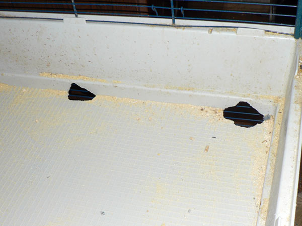
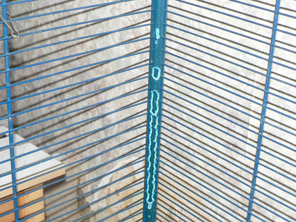
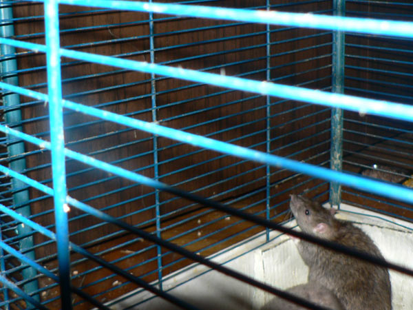
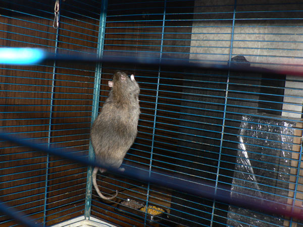
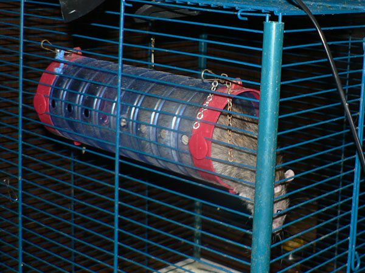
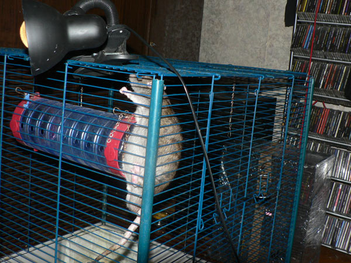
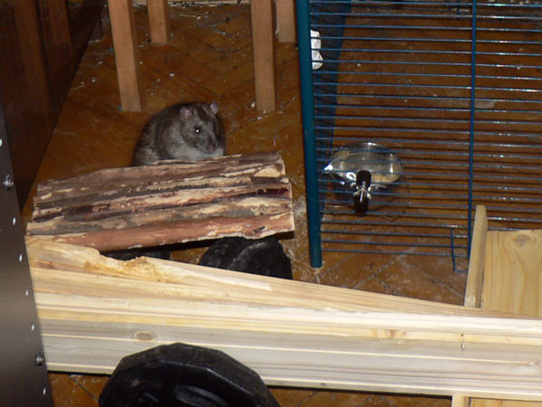
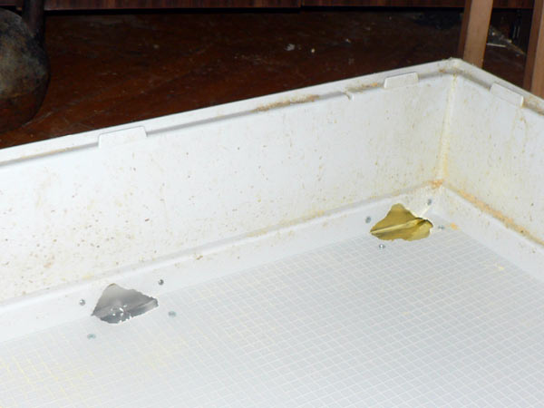
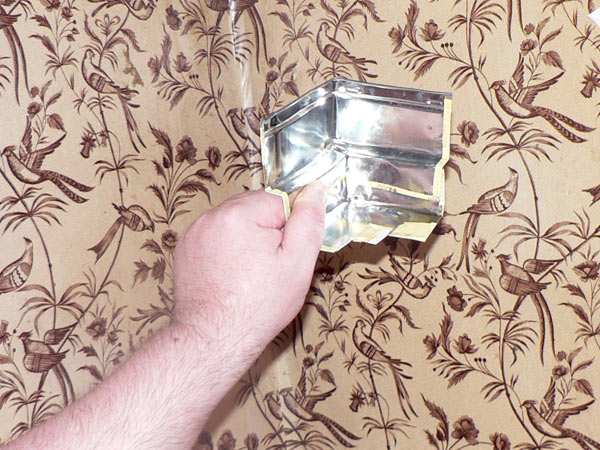
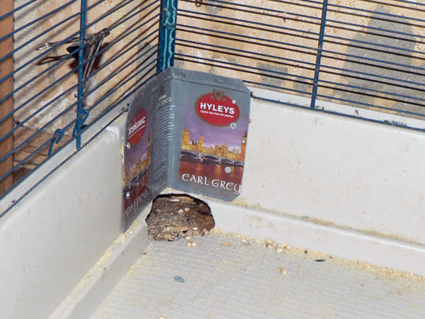

Эпопея с клеткой.

Это вот — дыра с первого этаа на второй. Виден забетонированный угол.

Это — дыры, которые (снизу!) прогрызли Джон Ди и Дюк Нюкем, когда дыру с предыдущего фото надежно заблокировали.

Стойки. Просто стойки, но после грызучих крыс.

Переделка клетки, ликвидация дырок. Менее грызучие крысы оставлены в своей половине, но на полу, пока идет ликвидация дыр. И полки пока в санобработке.

Терабайту скучно внизу.

— Может, вверху веселее?

— Ща гляну...

Этот вот туннель, когда в клетке был, игнорировался всеми хором. А тут Терабайт полез наверх от скуки.

— А как обратно?!

— Я тут не развернусь...

— А-а-а, где кнопка "panic"?!

— Зажевать провод для успокоения, что ли?

Дюк Нюкем: — И шо он таки суетится?

Джон Ди: — Я и сверху клетки посижу, я главный!

Тем временем дырки заделаны железом.

Вид снизу.

Фигурная фигня для затыкания угла клетки в сборе. Чайные коробочки очень даже пригодятся каждому крысоводу.

Прикрутили.

Вид изнутри — старая заплата и новая.

Решетка, которая блокирует верхний отсек от нижнего — пасюки не смогут больше прогрызать дыры наверх!
Более того — они были заперты в нижгнем отсеке...
...но к утру прогрызли выход наружу.
Ну и кто они после этого? (ответ: грызуны),